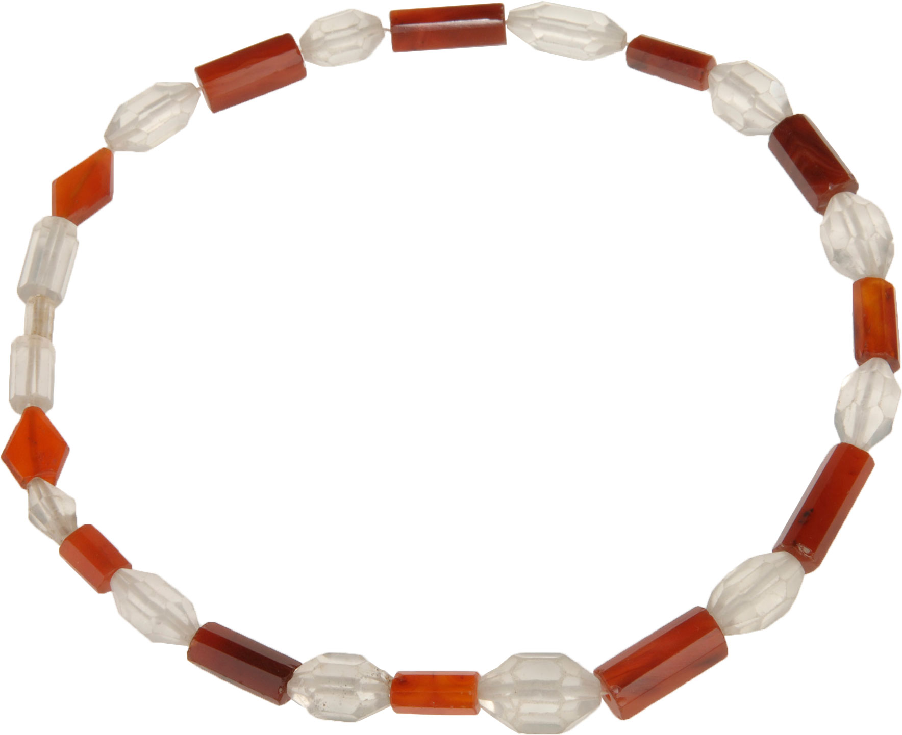
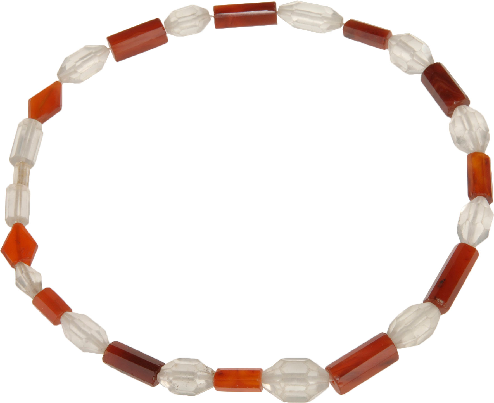

Think you know the Vikings?
The popular image of the Vikings—fierce raiders with horned helmets—is being challenged by a more complex picture. Vikings, the exhibition, reveals new insights brought to light through archaeological discoveries. See into the lives of these legendary people through more than 500 artifacts, many never before seen outside of Scandinavia.
World 0:58
 
